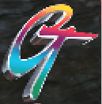
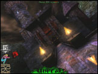
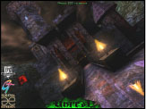

Graphic with no S3TC(200% zoom)
Graphic with S3TC(200% zoom)
Gradients and Abrupt Color Changes
|  | |
| Graphic with no S3TC(200% zoom) | Graphic with S3TC(200% zoom) |
| |
| Flawed S3TC compression |
Subtler Color Changes
| | |
| Graphic with no S3TC(200% zoom) | Graphic with S3TC(200% zoom) |
S3TC Image Quality Conclusion
|  |  |
| Graphic with no S3TC | Graphic with S3TC |
Next: Implementation, Support, and The Future of S3TC »
| Skip Ahead 1 Introduction 2 Higher Resolution Textures 3 More Benefits 4 S3 Texture Compression Algorithm 5 Image Quality 6 Implementation, Support, and The Future of S3TC |